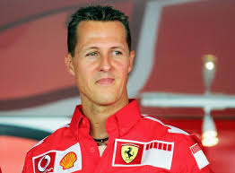
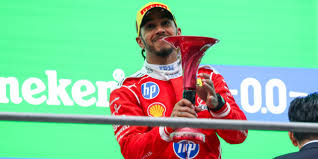
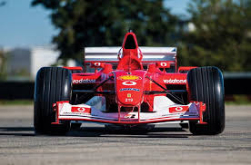

Первая победа Ferrari в гонке состоялась 11 мая 1947 года на автодроме в Риме. Пилот Франко Кортезе на Ferrari 125 S одержал историческую победу.
Знаменитый логотип с гарцующим жеребцом был создан графиней Паолиной Баракка для своего сына-аса, а Энцо Феррари использовал его в память о герое.
Красный цвет Ferrari (Rosso Corsa) стал официальным цветом итальянских гоночных автомобилей в 1920-х годах и остается символом бренда по сей день.
LaFerrari разгоняется до 100 км/ч менее чем за 3 секунды и имеет мощность 963 л.с., сочетая V12 двигатель с электрическим мотором.
Alberto Ascari выигрывает первый чемпионат мира для Ferrari на трассе Silverstone.
Phil Hill становится чемпионом мира на Ferrari 156 "Sharknose".
Niki Lauda выигрывает два чемпионских титула (1975, 1977) на Ferrari 312T.
Michael Schumacher выигрывает 5 чемпионатов подряд, устанавливая рекорды.
Победа в Monaco GP и возвращение Ferrari на вершину Формулы-1.